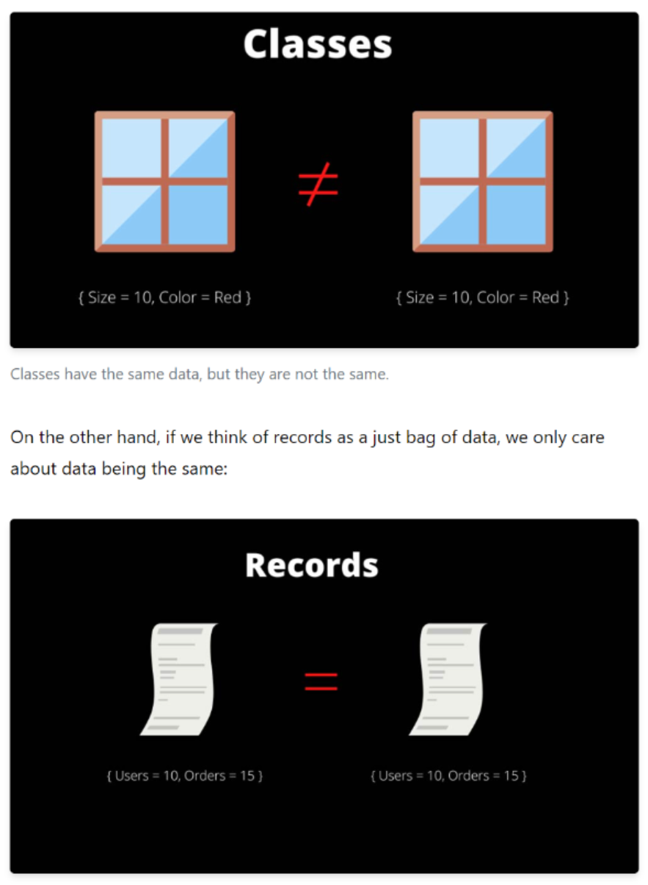

Struct:
- 1. Of value type, derives from System.Value type.
- 2. Doesn't support inheritance.
- 3. Doesn't have a memory overhead per new instance.
- 4. Passed by value.
- 5. Usually used for small amount of data.
- 6. Can't be abstract.
- 8. Allocations and de-allocations of value types are in general cheaper than allocations and de-allocations of reference types.
- 9. In structs, each variable contains its own copy of the data (except in the case of the ref and out parameter variables), and an operation on one variable does not affect another variable.
- 10. Can't contain a default constructor.
- 11. Can't contain a default constructor.
- 12. Can't contain a default constructor.
Class:
- 1. Of reference type, derives from System.Object type.
- 2. Supports inheritance.
- 3. Has a memory overhead per new instance.
- 4. Passed by reference.
- 5. Usually used for large amount of data.
- 6. Can be an abstract type.
- 8. Assignments of large reference types are cheaper than assignments of large value types.
- 9. In classes, two variables can contain the reference of the same object and any operation on one variable can affect another variable.
Both classes and structs:
- 1. Are compound data types typically used to contain a few variables that have some logical relationship.
- 2. Contain methods and events, static fields.
- 3. Support interfaces.
C# 9 introduces records, a new reference type that you can create instead of classes or structs. C# 10 adds record structs so that you can define records as value types. Records are distinct from classes in that record types use value-based equality. Two variables of a record type are equal if the record type definitions are identical, and if for every field, the values in both records are equal.

An interface is a contract: it specifies what members (methods and properties) a class implementing the interface must have. But interfaces will contain only the declaration of the members. It is only a contract, it has no implementations. Only very simple implementations by default for simple methods. A class can implement zero, one or multiple interfaces.
An interface can not specify the access level for methods or properties like protected or private, and they are public by default. An abstract class can limit the access level for methods and properties. The only exception is an abstract method that can not be private.
An interface can not have the declaration of constructors. If attempted, it treats them as different methods making the script implement both. An abstract class can have the declaration of constructors.
The interface can not have standard fields. They have to be properties with a get and set. The abstract class can have standard fields and properties.
When making changes to an interface, all inheriting scripts have to be changed to implement the changes or throw an error. When making changes to an abstract class, unless the added change was an abstract method, there is no need to change any other code since you can add the base implementation.
For constant it's mandatory to assign a value to it. it's defined in compile-time. By default, a const is static, and we cannot change the value of a const variable throughout the entire program.
Readonly is the keyword whose value we can change during runtime or assign it at run time but only through the non-static constructor.
Inheritance is a mechanism in object-oriented programming (OOP) that enables a class to derive properties and behavior from another class. The class that is being derived from is called the base class, and the class that is deriving from the base class is called the derived class. In C#, inheritance is implemented using the ":" symbol followed by the name of the base class.
To use inheritance effectively in C#, you should follow these best practices:
- Use inheritance to model an "is-a" relationship: Inheritance should be used when the derived class "is a" type of the base class. For example, a Car "is a" Vehicle, so you can use inheritance to derive a Car class from a Vehicle class.
- Avoid deep inheritance hierarchies: Deep inheritance hierarchies can make your code difficult to understand and maintain. You should try to keep the inheritance hierarchy as shallow as possible, ideally with no more than three levels of inheritance.
- Favor composition over inheritance: In some cases, composition (using objects as member variables of a class) can be a better alternative to inheritance. This can help reduce the complexity of your code and make it easier to understand.
- You should consider using composition over inheritance in C# in the following situations:
-
- 1. When you want to reuse behavior across multiple classes, but there is no "is-a" relationship: Inheritance is appropriate when you have a base class that defines behavior that is common to all derived classes. However, if you have behavior that is shared between classes that do not have an "is-a" relationship, composition may be a better choice. For example, if you have a ShoppingCart class and a Product class, you could use composition to give the ShoppingCart a list of Products, rather than creating a derived class for each type of shopping cart.
- 2. When you want to change behavior at runtime: With inheritance, the behavior of a derived class is determined at compile-time. If you need to change behavior at runtime, composition may be a better choice. For example, you could use composition to give a class a strategy object that can be changed at runtime to alter its behavior.
A Uri in C# is a class that represents a Uniform Resource Identifier (URI). A URI is a compact string of characters that identifies a resource on the internet or an intranet. URIs can be used to link to web pages, images, files, and other resources. In short, a Uri is a way to represent a web address in C#.
A use case is a list of actions or event steps typically defining the interactions between a role/actor and a system to achieve a goal.
It's a thread-safe collection that is designed to hold an unordered collection of objects. Unlike some other concurrent collection types, a ConcurrentBag is optimized for scenarios where elements are frequently added and removed from multiple threads.
This is another type of testing in which we look into the box which is being tested, It is done only to understand how it has been implemented. After that, we close the box and use the black box testing.
This is another type of testing in which we look into the box which is being tested, It is done only to understand how it has been implemented. After that, we close the box and use the black box testing.
This is another type of testing in which we look into the box which is being tested, It is done only to understand how it has been implemented. After that, we close the box and use the black box testing.
This is another type of testing in which we look into the box which is being tested, It is done only to understand how it has been implemented. After that, we close the box and use the black box testing.
This is another type of testing in which we look into the box which is being tested, It is done only to understand how it has been implemented. After that, we close the box and use the black box testing.
This is another type of testing in which we look into the box which is being tested, It is done only to understand how it has been implemented. After that, we close the box and use the black box testing.
This is another type of testing in which we look into the box which is being tested, It is done only to understand how it has been implemented. After that, we close the box and use the black box testing.
This is another type of testing in which we look into the box which is being tested, It is done only to understand how it has been implemented. After that, we close the box and use the black box testing.
This is another type of testing in which we look into the box which is being tested, It is done only to understand how it has been implemented. After that, we close the box and use the black box testing.
This is another type of testing in which we look into the box which is being tested, It is done only to understand how it has been implemented. After that, we close the box and use the black box testing.
This is another type of testing in which we look into the box which is being tested, It is done only to understand how it has been implemented. After that, we close the box and use the black box testing.